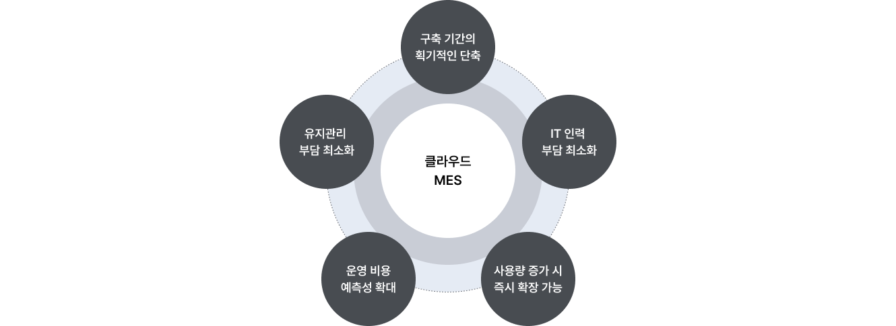
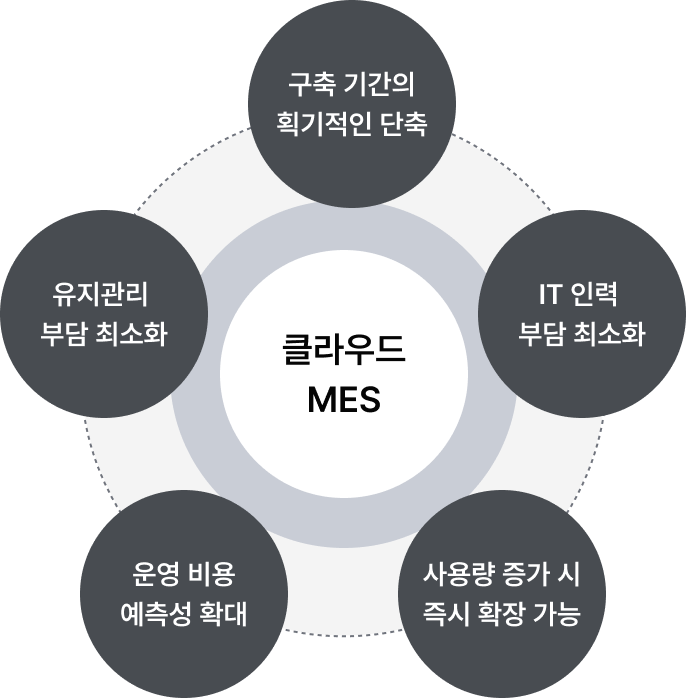

서비스 개요
미라콤아이앤씨의 클라우드 MES 서비스는 체계적인 표준 프로세스 기반의 제조실행 솔루션으로 클라우드 환경에서 지속적인 제조 경쟁력 향상을 지원합니다.

클라우드 MES 구축기간의 획기적인 단축 IT 인력 부담 최소화 사용량 증가시 즉시 확장 가능 운영비용 예측성 확대 유지관리 부담 최소화
클라우드 MES 구축기간의 획기적인 단축 IT 인력 부담 최소화 사용량 증가시 즉시 확장 가능 운영비용 예측성 확대 유지관리 부담 최소화
-
- 1
자동 솔루션 업데이트 제공
- IT 팀의 지원 없이 자동으로 정기적인 업데이트 및 패치 적용을 통한 최신 버전 사용 가능
-
- 2
보안 및 확장성 지원
- 클라우드 표준 아키텍쳐를 통한 보안 관리, 기업 환경 변화에 따른 빠른 온디맨드(On-demand) 지원
-
- 3
고객지원 서비스 제공
- 온라인 고객지원 서비스를 통한 시스템 오픈 후 안정적인 유지관리 및 사용 편의 증대